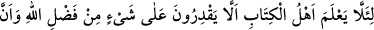

Ona esir olan asla kurtulmak istemez bendinden
Ona avlanan asla çıkmak istemez kemendinden
Molla Câmî de şöyle demiştir:
Aşkından hasta olan neden şifâ istesin
Sana esîr olan neden kurtuluş dilesin
“Ve size ışığında yürüyeceğiniz bir nur lutfetsin” Kıyâmet günü “mü’min erkeklerle
mü’min kadınların (amellerinin) nurları önlerinden ve sağlarından aydınlatıp
giderken” (el-Hadid, 57/12) âyet-i kerîmesinde Allah Teâlâ’nın beyân buyurduğu gibi.
Bu, cennete ulaşana dek sırât üzerinde yürüyecekleri aydınlıktır. Bu esnada ışığa ihtiyaç
duyulması cehennemin karanlıktan yaratılmış olmasındandır. Çünkü o karanlık olan
nefsi emmârenin bir sûretidir. Bu sebeple îmân ve takvânın aydınlığı o karanlığı yok
eder.
“Sizi bağışlasın.” Îmân etmeden önce işlemiş olduğunuz küfür ve isyânınızdan dolayı
sizi bağışlasın. Sahih bir hadîs-i şerîfte rivâyet edildiğine göre “Kâfirlerin iyilikleri
îman ettikten sonra Allah nezdinde makbûldür.”[284]
“Allah, çok bağışlayan, çok esirgeyendir.” Yâni, esirgemesi ve bağışlaması
sonsuzdur. Bu âyet-i kerîmede nefsin yapmayı düşünüp tasarladığı günahın da
afvedileceğine işâret vardır. Çünkü o en büyük isyan ve günahlardandır. Nitekim şöyle
demişlerdir: Vücûdun öyle büyük bir günahtır ki, başka hiçbir günah onunla
kıyaslanamaz.
Allah yolunun eri olduysan
Vazgeç sarığından başından
29. Böylece Kitap Ehli, Allah’ın lütfundan hiçbir şey elde edemeyeceklerini
bilsinler. Lütuf bütünüyle Allah’ın elindedir, onu dilediğine bahşeder. Allah, büyük
lütuf sâhibidir.
“Böylece kitap ehli, Allah’ın lütfundan hiçbir şey elde edemeyeceklerini bilsinler.”
Âyetin baş tarafında ki cer harfi şart mânâsını içine alan istek cümlesinin mânâsına
mütealliktir. Çünkü takdîri şöyledir: Şâyet Allah’tan korkar ve peygamberine
inanırsanız, size şunları şunları ihsân eder. Kitâb ehlinden müslüman olmayanlar
bilsinler ki onlar, zikredilen iki kat mükâfâta, nûr ve mağfirete eremezler, ermeleri de